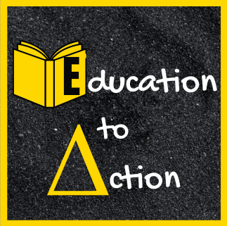

We take a pragmatic approach to problem solving, meaning the insights offered from EtA are designed around the issues specific to your institution and its unique situation, in forming the right action plan for your needs.
As experienced facilitators we use methods based in empathy and lived-experience to lead difficult conversations and courageous discussions, across varying subjects, political issues, and current events.
Any good initiative must start with a plan. Before a plan can be made, we need the right data. EtA will gather that data and utilize all resources provided to ensure that all insights given are based in the most recent and relevant information available via the following:
EtA has led interactive workshops and presentations, both in-person and virtually. The topics span across a variety of DEI related subjects including:
"Nothing About Us Without Us is For Us!"
We believe that any efforts aimed at addressing a disparity for a population requires that members of that group have a seat at the leadership table.
We work in community alongside our clients, prioritizing and elevating the voices of those most impacted in every aspect of our work.
When the right tool does not exist, we build it. EtA designs and ships custom civic technology, public directories, review platforms, and data tools, using an AI-assisted development process that turns research and community needs into working software.
Two of our own platforms are live and free to use:
Built by an Applied Sociologist, not an engineering firm, so the tools stay close to the mission and the people they serve.